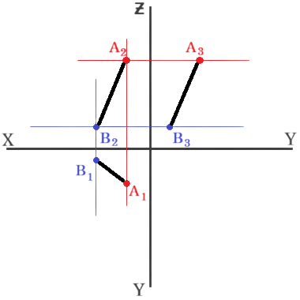
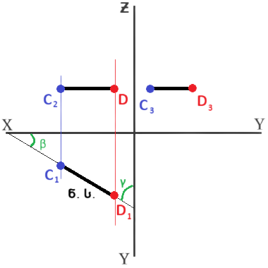
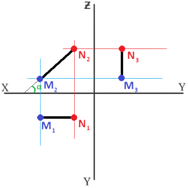
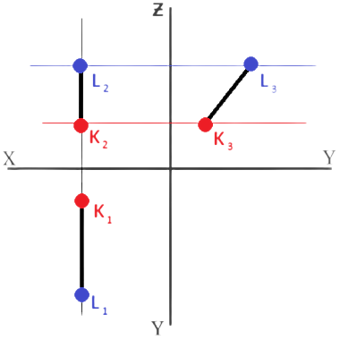
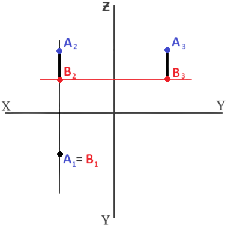
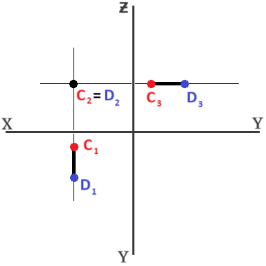
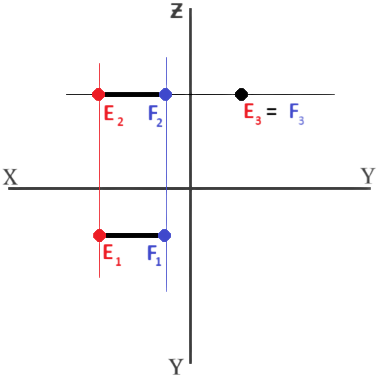

★ დეკარტის მართკუთხა კოორდინატთა სისტემაში ბრტყელი ნახაზი ხასიათდება სამი თვისებით:
წერტილის შვეული და თარაზული გეგმილები განლაგდება x-ღერძის საერთო მართობზე;
წერტილის შვეული და პროფილური გეგმილები განლაგდება ƶ-ღერძის საერთო მართობზე;
წერტილის პროფილური გეგმილი იმავე y-მანძილითაა დაშორებული ƶ-ღერძიდან, რა მანძილითაც თარაზული გეგმილია დაშორებული x-ღერძიდან.

★ წრფეს, რომელიც დახრილია გეგმით სიბრტყეების მიმართ, ეწოდება ზოგადი მდებარეობის წრფე, ხოლო წრფეს, რომელიც პარალელურია ან მართობულია რომელიმე გეგმით სიბრტყის მიმართ, ეწოდება კერძო მდებარეობის წრფე.
თარაზული გეგმით სიბრტყის პარალელურ წრფეს თარაზულა წრფე ეწოდება. მისი ყველა წერტილი ხასიათდება მუდმივი ƶ-კოორდინატით, რის გამოც შვეული და პროფილური გეგმილები ჰორიზონტალურად განლაგდებიან.

შვეული გეგმით სიბრტყის პარალელურ წრფეს შვეულა წრფე ეწოდება. იგი ხასიათდება მუდმივი y-ით, ხოლო მისი თარაზული და პროფილური გეგმილები y-ღერძის მართობულად მოთავსდება.

პროფილური გეგმით სიბრტყის პარალელურ წრფეს ეწოდება პროფილური ან პროფილა წრფე. იგი ხასიათდება მუდმივი x-ით, რის გამოც შვეული და თარაზული გეგმილები x-ღერძის მართობზე ზიან, ხოლო პროფილური გეგმილი განსაზღვრავს წრფის მონაკვეთის ნამდვილ სიდიდეს.

★ გეგმით სიბრტყეების მართობულ წრფეებს ეწოდებათ მაგეგმილებელი წრფეები.
თარაზული გეგმით სიბრტყის მართობულ წრფეს ეწოდება თარაზულად მაგეგმილებელი წრფე. მისი თარაზული გეგმილი წერტილია, ხოლო შვეული და პროფილური გეგემილები ƶ-ღერძის პარალელური წრფეებია და გამოსახავენ ნამდვილ სიდიდეს.

შვეული გეგმით სიბრტყის მართობულ წრფეს ეწოდება შვეულად მაგეგმილებელი წრფე. შვეული გეგმილი წერტილია, ხოლო თარაზული და პროფილური გეგმილები y-ღერის პარალელურია. წრფის მონაკვეთი პროფილურ და თარაზულ სიბრტყეებზე ნამდვილი სიდიდით გეგმილდებიან.

პროფილური გეგმით სიბრტყის მართობულ წრფეს ეწოდება პროფილურად მაგეგმილებელი წრფე. მისი პროფილური გეგმილი წერტილია, ხოლო შვეული და თარაზული გეგმილები x-ღერძის პარალელური და გამოსახავენ წრფის მონაკვეთების ნამდვილ სიდიდეს.
